哨兵模式 #
1 概述 #
- 哨兵模式是 Redis 的高可用的解决方案之一，由一个或多个哨兵实例组成的哨兵系统可以监视任意多个主服务器，以及这些主服务器属下的所有从服务器，并在被监视的主服务器进入下线状态时，自动将下线主服务器属下的某个从服务器升级为新的主服务器，然后由新的主服务器代替已下线的主服务器继续处理命令请求。
- 具体示例如下：
-
下图展示了一个哨兵系统监视服务器的例子，其中：
-
用双环图案表示的是当前的主服务器
server1。 -
用单环图案表示的是主服务器的三个从服务器
server2、server3、server4。 -
server2、server3、server4三个从服务器正在复制主服务器server1，而哨兵系统正在监视所有四个服务器。
-
-
假设这时，主服务器
server1进入下线状态，那么从服务器server2、server3、server4对主服务器的复制操作将被终止，并且哨兵系统会察觉到server1已下线，如下图所示（下线的服务器用虚线表示）。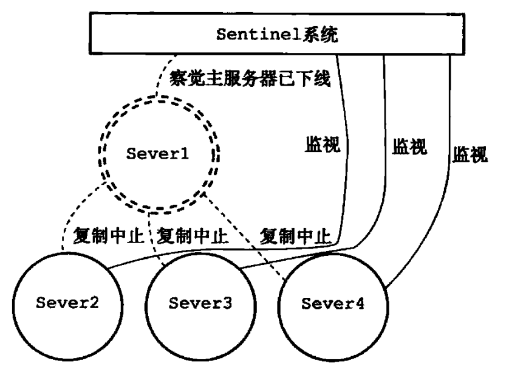
-
当
server1的下线时长超过用户设定的下线时长上限时，哨兵系统就会对server1执行故障转移操作：- 首先，哨兵系统会挑选
server1属下的其中一个从服务器，并将这个被选中的从服务器升级为新的主服务器。 - 之后，哨兵系统会向
server1属下的所有从服务器发送新的复制指令，让他们成为新的主服务器的从服务器，当所有从服务器都开始复制新的主服务器时，故障转移操作执行完毕。 - 另外，哨兵还会继续监视已下线的
server1，并在他重新上线时，将他设置为新的主服务器的从服务器。
- 首先，哨兵系统会挑选
-
例如，下图展示了哨兵系统将
server2升级为新的主服务器，并让服务器server3和server4成为server2的从服务器的过程，之后，如果server1重新上线的话，他将被哨兵系统降级为server2的从服务器。

-
2 原理 #
2.1 初始化哨兵 #
- 当一个哨兵启动时，他需要执行以下步骤：
- 初始化服务器。
- 将普通 Redis 服务器使用的代码替换成哨兵专用代码。
- 初始化哨兵状态。
- 根据给定的配置文件，初始化哨兵的监视主服务器列表。
- 创建连向主服务器的网络连接。
2.1.1 初始化服务器 #
- 首先，因为哨兵本质上只是一个运行在特殊模式下的 Redis 服务器，所以启动哨兵的第一步，就是初始化一个普通的 Redis 服务器，具体步骤如下：
- 初始化服务器状态结构：
-
初始化服务器的第一步就是创建一个
struct redisServer类型的实例变量server作为服务器的状态，并为结构中的各个属性设置默认值。 -
初始化
server变量的工作由redis.c/initServerConfig函数完成，以下是这个函数最开头的一部分代码：void initServerConfig(void) { int j; // 设置服务器的运行 id getRandomHexChars(server.runid,REDIS_RUN_ID_SIZE); // 设置默认配置文件路径 server.configfile = NULL; // 设置默认服务器频率 server.hz = REDIS_DEFAULT_HZ; // 为运行 id 加上结尾字符 server.runid[REDIS_RUN_ID_SIZE] = '\0'; // 设置服务器的运行架构 server.arch_bits = (sizeof(long) == 8) ? 64 : 32; // 设置默认服务器端口号 server.port = REDIS_SERVERPORT; // ... } -
initServerConfig函数完成的主要工作如下：
-
- 载入配置项：
- 服务器在用
initServerConfig函数初始化完server变量之后，就会开始载入用户给定的配置参数和配置文件，并根据用户设定的配置，对server变量相关属性的值进行修改。
- 服务器在用
- 初始化服务器数据结构：
-
在之前执行
initServerConfig函数初始化server状态时，程序只创建了命令表一个数据结构，不过除了命令表之外，服务器状态还包含其他数据结构，例如：server.clients链表，这个链表记录了所有与服务器相连的客户端的状态结构，链表的每个节点都包含了一个redisClient结构实例。server.db数组，数组中包含了服务器的所有数据库。server.pubsub_channels字典，用于保存频道订阅信息。server.pubsub_patterns链表，用于保存模式订阅信息。server.lua，用于保存执行Lua脚本的Lua环境。server.slowlog，用于保存慢查询日志。
-
当初始化服务器进行到这一步，服务器将调用
initSerer函数，为以上提到的数据结构分配内存，并在有需要时，为这些数据结构设置或者关联初始化值。 -
服务器到现在才初始化数据结构的原因在于服务器必须先载入用户指定的配置选项，然后才能正确地对数据结构进行初始化，如果在执行
initServerConfig函数时就对数据结构进行初始化，那么一旦用户通过配置选项修改了和数据结构有关的服务器状态属性，服务器就要重新调整和修改已创建的数据结构，为了避免出现这种麻烦的情况，服务器选择了将server状态的初始化分为两步进行，initServerConfig函数主要负责初始化一般属性，而initServer函数主要负责初始化数据结构。 -
除了初始化数据结构之外，
initServer还进行了一些非常重要的设置操作，其中包括：- 为服务器设置进行信号处理器。
- 创建共享对象，这些对象包含 Redis 服务器经常用到的一些值，例如包含
OK回复的字符串对象、包含ERR回复的字符串对象、包含整数 1 到 10000 的字符串对象等，服务器通过重用这些共享对象来避免反复创建相同的对象。 - 打开服务器的监听端口，并为监听套接字关联 连接应答事件处理器，等待服务器正式运行时接收客户端的连接。
- 为 serverCron 函数创建 时间事件，等待服务器正式运行时执行 serverCron 函数。
- 如果 AOF持久化功能已经打开，那么打开现有的 AOF 文件，如果 AOF 文件不存在，那么创建并打开一个新的 AOF 文件，为 AOF 写入做好准备。
- 初始化服务器的后台 I/O 模块，为将来的 I/O 操作做好准备。
-
- 还原数据库状态：
- 在完成了对服务器状态
server变量的初始化之后，服务器需要载入 RDB 文件或者 AOF 文件，并根据文件记录的内容来还原服务器的数据库状态。 - 根据服务器是否启用了 AOF 持久化功能，服务器载入数据时所使用的目标文件会有所不同：
- 如果服务器启用了 AOF 持久化功能，那么服务器使用 AOF 文件来还原数据库状态。
- 相反地，如果服务器没有启用 AOF 持久化功能，那么服务器使用 RDB 文件来还原数据库状态。
- 在完成了对服务器状态
- 执行事件循环：
- 在初始化的最后一步，将开始执行服务器的事件循环，至此，服务器的初始化工作圆满完成，服务器现在开始可以接受客户端的连接请求，并处理客户端发来的命令请求了。
- 初始化服务器状态结构：
- 不过，因为哨兵执行的工作和普通 Redis 服务器执行的工作不同，所以哨兵的初始化过程和普通 Redis 服务器的初始化过程并不完全相同，例如，普通服务器在初始化时会通过载入 RDB 文件或者 AOF 文件来还原数据库状态，但是因为哨兵并不使用数据库，所以初始化哨兵时就不会载入 RDB 文件或者 AOF 文件。
2.1.2 使用哨兵专用代码 #
- 启动哨兵的第二个步骤就是将一部分普通 Redis 服务器使用的代码替换成哨兵专用代码，例如：
-
普通 Redis 服务器使用
redis.h/REDIS_SERVERPORT常量的值作为服务器端口，而哨兵则使用sentinel.c/REDIS_SENTINEL_PORT常量的值作为服务器端口。#define REDIS_SERVERPORT 6379#define REDIS_SENTINEL_PORT 26379 -
普通 Redis 使用
redis.c/redisCommandTable作为服务器的命令表，而哨兵使用sentinel.c/sentinelcmds作为服务器的命令表，并且其中的INFO命令会使用哨兵模式下的专用实现sentinel.c/sentinelInfoCommand函数，而不是普通 Redis 服务器使用的实现redis.c/infoCommand函数。struct redisCommand redisCommandTable[] = { {"get",getCommand,2,"rF",0,NULL,1,1,1,0,0}, {"set",setCommand,-3,"wm",0,NULL,1,1,1,0,0}, {"setnx",setnxCommand,3,"wmF",0,NULL,1,1,1,0,0}, // ... {"pfcount",pfcountCommand,-2,"r",0,NULL,1,1,1,0,0}, {"pfmerge",pfmergeCommand,-2,"wm",0,NULL,1,-1,1,0,0}, {"pfdebug",pfdebugCommand,-3,"w",0,NULL,0,0,0,0,0}, {"latency",latencyCommand,-2,"arslt",0,NULL,0,0,0,0,0} };struct redisCommand sentinelcmds[] = { {"ping",pingCommand,1,"",0,NULL,0,0,0,0,0}, {"sentinel",sentinelCommand,-2,"",0,NULL,0,0,0,0,0}, {"subscribe",subscribeCommand,-2,"",0,NULL,0,0,0,0,0}, {"unsubscribe",unsubscribeCommand,-1,"",0,NULL,0,0,0,0,0}, {"psubscribe",psubscribeCommand,-2,"",0,NULL,0,0,0,0,0}, {"punsubscribe",punsubscribeCommand,-1,"",0,NULL,0,0,0,0,0}, {"publish",sentinelPublishCommand,3,"",0,NULL,0,0,0,0,0}, {"info",sentinelInfoCommand,-1,"",0,NULL,0,0,0,0,0}, {"role",sentinelRoleCommand,1,"l",0,NULL,0,0,0,0,0}, {"client",clientCommand,-2,"rs",0,NULL,0,0,0,0,0}, {"shutdown",shutdownCommand,-1,"",0,NULL,0,0,0,0,0} };sentinelcmds命令表也解释了为什么在哨兵模式下，Redis 服务器不能执行诸如SET、DBSIZE、EVAL等这些命令，因为服务器根本没有在命令表中载入这些命令，PING、SENTINEL、SUBSCRIBE、UNSUBSCRIBE、PSUBSCRIBE、PUNSUBSCRIBE、PUBLISH、INFO、ROLE、CLIENT、SHUTDOWN这十一个命令就是客户端可以对哨兵执行的全部命令。
-
2.1.3 初始化哨兵状态 #
-
在应用了哨兵的专用代码之后，接下来，服务器会初始化一个
sentinel.c/sentinelState结构，这个结构保存了服务器中所有和哨兵有关的状态（服务器的一般状态仍然由redis.h/redisServer结构保存）。struct sentinelState { // 当前纪元，用于实现故障转移 uint64_t current_epoch; // 保存了所有被这个哨兵监视的主服务器，字典的键是主服务器的名字，字典的值则是一个指向 sentinelRedisInstance 结构的指针 dict *masters; // 是否进入 TILT 模式 int tilt; // 目前正在运行的脚本的数量 int running_scripts; // 进入 TILT 模式的时间 mstime_t tilt_start_time; // 最后一次执行事件处理器的时间 mstime_t previous_time; // 一个 FIFO 队列，包含了所有需要执行的用户脚本 list *scripts_queue; // 如果不为空，则表示传给其他哨兵的 IP 地址。 char *announce_ip; // 如果不为 0，则表示传给其他哨兵的端口号 int announce_port; } sentinel;
2.1.4 初始化哨兵状态的 masters 属性 #
-
哨兵状态中的
masters字典中记录了所有被哨兵监视的主服务器的相关信息，其中字典的键是被监视主服务器的名字，字典的值是被监视主服务器对应的sentinel.c/sentinelRedisInstance结构。 -
每个
sentinelRedisInstance结构代表一个被哨兵监视的 Redis 服务器实例，这个实例可以是主服务器、从服务器、或者另外一个哨兵。 -
实例结构包含的属性非常多，以下代码展示了实例结构在表示主服务器时使用的其中一部分属性：
typedef struct sentinelRedisInstance { // 标识值，记录了实例的类型，以及该实例的当前状态 int flags; /* See SRI_... defines */ // 实例的名字，主服务器的名字由用户在配置文件中配置，从服务器以及哨兵的名字由哨兵自动设置 char *name; /* Master name from the point of view of this sentinel. */ // 实例的运行 ID char *runid; /* run ID of this instance. */ // 配置纪元，用于实现故障转移 uint64_t config_epoch; /* Configuration epoch. */ // 实例的地址 sentinelAddr *addr; /* Master host. */ // 哨兵 down-after-milliseconds 选项设定的值 // 即实例无响应多少毫秒之后才会判断为主观下线 mstime_t down_after_period; /* Consider it down after that period. */ // 哨兵 monitor <master-name> <IP> <port> <quorum> 选项中的 quorum 参数 // 判断这个实例为客观下线所需的支持投票数量 unsigned int quorum;/* Number of sentinels that need to agree on failure. */ // 哨兵 parallel-syncs <master-name> <number> 选项的值 // 在执行故障转移操作时，可以同时对新的主服务器进行同步的从服务器数量 int parallel_syncs; /* How many slaves to reconfigure at same time. */ // 哨兵 failover-timeout <master-name> <ms> 选项的值 // 刷新故障迁移状态的最大时限 mstime_t failover_timeout; /* Max time to refresh failover state. */ } sentinelRedisInstance; -
对哨兵状态的初始化将引发对
masters字典的初始化，而masters字典的初始化是根据被载入的哨兵配置文件来进行的，例如：-
用户在启动哨兵时，指定了包含以下内容的配置文件：
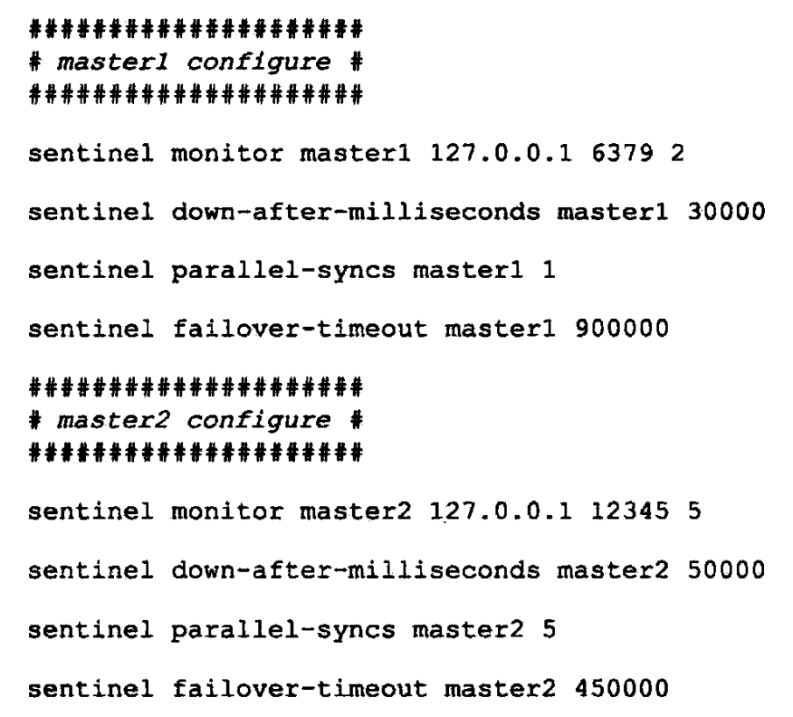
-
那么哨兵将为主服务器
master1、master2创建如下图所示的实例结构：

-
同时，这两个实例结构又回被保存到哨兵状态的
masters字典中，如下图所示：
-
2.1.5 创建连向主服务器的网络连接 #
-
初始化哨兵的最后一步是创建连向被监视主服务器的网络连接，哨兵将成为主服务器的客户端，他可以向主服务器发送命令，并从命令回复中获取相关的信息。
-
对于每个被哨兵监视的主服务器来说，哨兵会创建两个连向主服务器的异步网络连接：
- 一个是命令连接，这个连接专门用于向主服务器发送命令，并接收命令回复。
- 另一个是订阅连接，这个连接专门用于订阅主服务器的
__sentinel__:hello频道。
-
下图展示了一个哨兵向被他监视的两个主服务器
master1和master2创建命令连接和订阅连接的例子：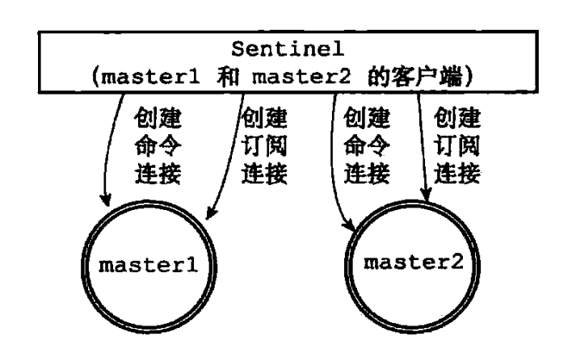
为什么有两个连接？
- 在 Redis 目前的发布与订阅功能中，被发送的信息都不会保存在 Redis 服务器里面，如果在信息发送时，想要接收信息的客户端不在线或者断线，那么这个客户端就会丢失这条信息，因此，为了不丢失
__sentinel__:hello频道的任何信息，哨兵必须专门用一个订阅连接来接收该频道的信息。 - 另一方面，除了订阅频道之外，哨兵还必须向主服务器发送命令，以此来与主服务器进行通信，所以哨兵还必须向主服务器创建命令连接。
- 因为哨兵需要与多个实例创建多个网络连接，所以哨兵使用的是异步连接。
- 在 Redis 目前的发布与订阅功能中，被发送的信息都不会保存在 Redis 服务器里面，如果在信息发送时，想要接收信息的客户端不在线或者断线，那么这个客户端就会丢失这条信息，因此，为了不丢失
2.2 获取主服务器信息 #
- 哨兵默认会以每十秒一次的频率，通过命令连接向被监视的主服务器发送
INFO命令，并通过分析INFO命令的回复来获取主服务器的当前信息。 - 通过分析主服务器返回的
INFO命令回复，哨兵可以获取以下两方面的信息：- 一方面是关于主服务器本身的信息，包括
run_id域记录的服务器运行 ID，以及role域记录的服务器角色。 - 另一方面是关于主服务器属下所有从服务器的信息，每个从服务器都由一个
slave字符串开头的行记录，每行的ip记录了从服务器的 IP 地址，而port记录了从服务器的端口号，根据这些 IP 地址和端口号，哨兵无需用户提供从服务器的地址信息，就可以自动发现从服务器。
- 一方面是关于主服务器本身的信息，包括
- 根据
run_id和role记录的信息，哨兵将对主服务器的实例结构进行更新，例如主服务器重启之后，他的运行 ID 就会和实例结构之前保存的运行 ID 不同，哨兵检测到这一情况之后，就会对实例结构的运行 ID 进行更新。 - 至于主服务器返回的从服务器信息，则主要用于更新主服务器实例结构的
slaves字典，这个字典记录了主服务器属下从服务器的名单：- 字典的键是由哨兵自动设置的从服务器名字，格式为
ip:port，如对于 IP 地址为127.0.0.1，端口号为11111的从服务器来说，哨兵为他设置的名字就是127.0.0.1:11111。 - 字典的值则是从服务器对应的实例结构，例如，如果键是
127.0.0.1:11111，那么这个键的值就是 IP 地址为127.0.0.1，端口号为11111的从服务器的实例结构。
- 字典的键是由哨兵自动设置的从服务器名字，格式为
- 哨兵在分析
INFO命令中包含的额从服务器信息时，会检查从服务器对应的实例结构是否已经存在于slaves字典：- 如果从服务器对应的实例结构已经存在，那么哨兵对从服务器的实例结构进行更新。
- 如果从服务器对应的实例结构不存在，那么说明这个从服务器是新发现的从服务器，哨兵会在
slaves字典中为这个从服务器新创建一个实例结构。
- 具体实例如下：
-
假如主服务器
master有三个从服务器slave0、slave1和slave2，并且一个哨兵正在连接主服务器，那么哨兵将持续地向主服务器发送INFO命令，并获得类似于以下内容的回复：
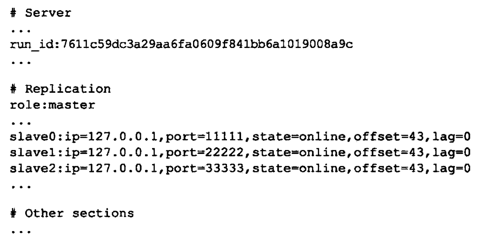
-
从
INFO命令的回复信息中我们可以得到以下内容：- 主服务器的相关信息：
- 运行 ID 为
7611c59dc3a29aa6fa0609f841bb6a1019008a9c。 - 服务器角色为
master。
- 运行 ID 为
- 从服务器的相关信息：
- 有三个从服务器，
ip地址均为127.0.0.1，端口分别为11111、22222、33333。
- 有三个从服务器，
- 主服务器的相关信息：
-
然后哨兵将分别为三个从服务器创建他们各自的实例结构，并将这些结构保存到主服务器实例结构的
slaves字典里面。
上图中主服务器实例结构和从服务器实例结构之间的区别如下：
- 主服务器实例结构的
flags属性的值为SRI_MASTER，而从服务器实例结构的flags属性的值为SRI_SLAVE。 - 主服务器实例结构的
name属性的值是用户使用哨兵配置文件设置的，而从服务器实例结构的name属性的值则是哨兵根据从服务器的 IP 地址和端口号自动设置的。
- 主服务器实例结构的
-
2.3 获取从服务器信息 #
-
当哨兵发现主服务器有新的从服务器出现时，哨兵除了会为这个新的从服务器创建相应的实例结构之外，还会创建连接到从服务器的命令连接和订阅连接。
-
在创建命令连接之后，哨兵在默认情况下，会以每十秒一次的频率通过命令连接向从服务器发送
INFO命令，并获得类似于以下内容的回复：
-
根据
INFO命令的回复，哨兵会提取出以下信息：- 从服务器的运行 ID：
run_id。 - 从服务器的角色：
role。 - 主服务器的 IP 地址：
master_host。 - 主服务器的端口号：
master_port。 - 主服务器的连接状态：
master_link_status。 - 从服务器的优先级：
slave_priority。 - 从服务器的复制偏移量：
slave_repl_offset。
- 从服务器的运行 ID：
-
根据这些信息，哨兵会对从服务器的实例结构进行更新，下图展示了哨兵根据上面的
INFO命令回复对从服务器的实例结构进行更新之后，实例结构的样子：
2.4 向主服务器和从服务器发送信息 #
-
在默认情况下，哨兵会以每两秒一次的频率，通过命令连接向所有被监视的主服务器和从服务器发送以下格式的命令：
PUBLISH __sentinel__:hello "<s_ip>,<s_port>,<s_runid>,<s_epoch>,<m_name>,<m_ip>,<m_port>,<m_epoch>" -
这条命令向服务器的
__sentinel__:hello频道发送了一条信息，信息的内容由多个参数组成：- 以
s_开头的参数记录的是哨兵本身的信息，各个参数的意义为：s_ip：哨兵的 IP 地址。s_port：哨兵的端口号。s_runid：哨兵的运行 ID。
- 以
m_开头的参数记录的是主服务器的信息，如果哨兵正在监视的是主服务器，那么这些参数记录的就是主服务器的信息，如果哨兵正在监视的是从服务器，那么这些参数记录的就是从服务器正在复制的主服务器的信息，各个参数的意义为：m_name：主服务器的名字。m_ip：主服务器的 IP 地址。m_port：主服务器的端口号。m_epoch：主服务器当前的配置纪元。
- 以
2.5 接收来自主服务器和从服务器的频道信息 #
-
当哨兵与一个主服务器或者从服务器建立起订阅连接之后，哨兵就会通过订阅连接，向服务器发送以下命令：
SUBSCRIBE __sentinel__:hello -
哨兵对
__sentinel:hello频道的订阅会一直持续到哨兵与服务器的连接断开为止，也就是说，对于每个与哨兵连接的服务器，哨兵既通过命令连接向服务器的__sentinel__:hello频道发送信息，又通过订阅连接从服务器的__sentinel__:hello频道接收信息。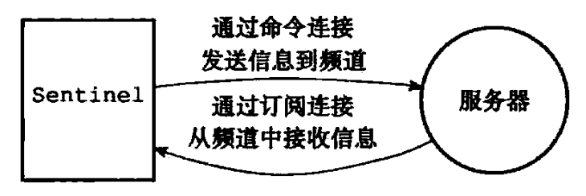
-
对于监视同一个服务器的多个哨兵来说，一个哨兵发送的信息会被其他哨兵接收到，这些信息会被用于更新其他哨兵对被监视服务器的认知。
-
具体实例如下：
-
假设现在有
sentinel1、sentinel2、sentinel3三个哨兵在监视同一个服务器，那么当sentinel1向服务器的__sentinel__:hello频道发送一条信息时，所有订阅了__sentinel__:hello频道的哨兵（包括sentinel1在内）都会收到这条消息。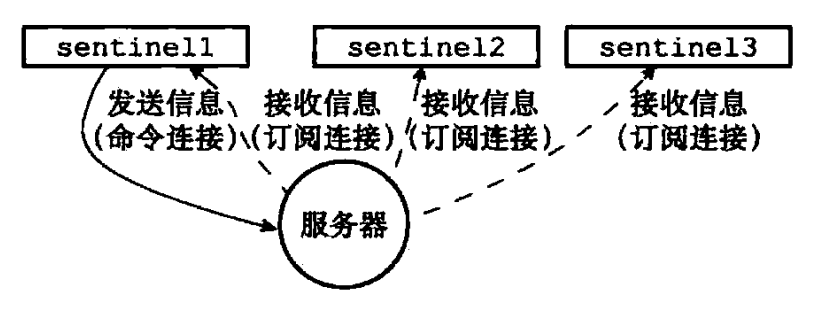
-
当一个哨兵从
__sentinel__:hello频道收到一条消息时，哨兵会对这条消息进行分析，提取出信息中的哨兵的 IP 地址、端口号、运行 ID 等八个参数，并进行一下检查：- 如果信息中记录的哨兵运行 ID 和接收信息的哨兵的运行 ID 相同，那么说明这条信息是哨兵自己发送到，哨兵将丢弃这条信息，不做进一步处理。
- 相反地，如果信息中记录的哨兵运行 ID 和接收信息的哨兵的运行 ID 不相同，那么说明这条信息是监视同一个服务器的其他哨兵发来的，接收信息的哨兵将根据信息中的各个参数，对相应主服务器的实例结构进行更新。
-
2.5.1 更新 sentinels 字典 #
- 哨兵为主服务器创建的实例结构中的
sentinels字典保存了除哨兵本身之外，所有同样监视这个主服务器的其他哨兵的资料：sentinels字典的键是其中一个哨兵的名字，格式为ip:port，比如对于 IP 地址为127.0.0.1，端口号为26379的哨兵来说，这个哨兵在sentinels字典中的键就是127.0.0.1:26379。sentinels字典的值则是键所对应哨兵的实例结构，比如对于127.0.0.1:26379来说，这个键在sentinels字典中的值就是 IP 为127.0.0.1，端口号为26379的哨兵的实例结构。
- 当一个哨兵接收到其他哨兵发来的信息时（我们称呼发送信息的哨兵为源哨兵，接收信息的哨兵为目标哨兵），目标哨兵会从信息中分析并提取出以下两方面参数：
- 与哨兵有关的参数：
- 源哨兵的 IP 地址、端口号、运行 ID 和配置纪元。
- 与主服务器有关的参数：
- 源哨兵正在监视的主服务器的名字、IP 地址、端口号和配置纪元。
- 与哨兵有关的参数：
- 根据信息中提取的主服务器参数，目标哨兵会在自己的哨兵状态的
masters字典中查找相应的主服务器实例结构，然后根据提取出的哨兵参数，检查主服务器实例结构的sentinels字典中，源哨兵的实例结构是否存在：- 如果源哨兵的实例结构已经存在，那么对源哨兵的实例结构进行更新。
- 如果源哨兵的实例结构不存在，那么说明源哨兵是刚刚开始监视主服务器的新哨兵，目标哨兵会为源哨兵创建一个新的实例结构，并将这个结构添加到
sentinels字典里面。
- 因为一个哨兵可以通过分析接收到的频道信息来获知其他哨兵的存在，并通过发送频道信息来让其他哨兵知道自己的存在，所以用户在使用哨兵的时候并不需要提供各个哨兵的地址信息，监视同一个主服务器的多个哨兵可以自动发现对方。
- 具体实例如下：
-
假设分别有
127.0.0.1:26379、127.0.0.1:26380、127.0.0.1:26381三个哨兵正在监视主服务器127.0.0.1:6379，那么当127.0.0.1:26379这个哨兵接收到以下信息时：
哨兵将执行以下动作：
- 第一条信息的发送者为
127.0.0.1:26379自己，这条信息会被忽略。 - 第二条信息的发送者为
127.0.0.1:26381，哨兵会根据这条信息中提取出的内容，对sentinels字典中127.0.0.1:26381对应的实例结构进行更新。 - 第二条信息的发送者为
127.0.0.1:26380，哨兵会根据这条信息中提取出的内容，对sentinels字典中127.0.0.1:26380对应的实例结构进行更新。
- 第一条信息的发送者为
-
下图展示了哨兵
127.0.0.1:26379为主服务器127.0.0.1:6379创建的实例结构，以及结构中的sentinels字典。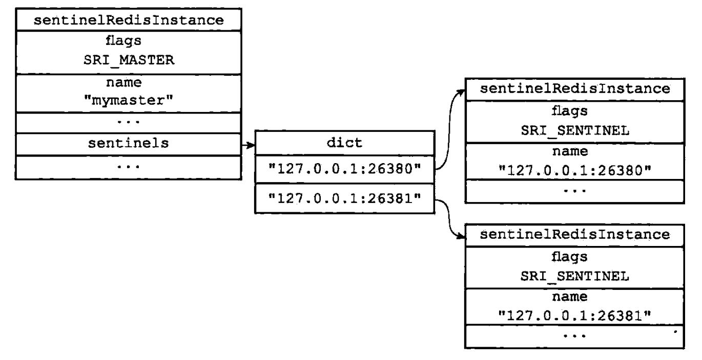
-
和
127.0.0.1:26379一样，其他两个哨兵也会创建类似于上图所示的sentinels字典，区别在于字典中保存的哨兵信息不同：127.0.0.1:26380创建的sentinels字典会保存127.0.0.1:26379和127.0.0.1:26381两个哨兵的信息。127.0.0.1:26381创建的sentinels字典会保存127.0.0.1:26379和127.0.0.1:26380两个哨兵的信息。
-
2.5.2 创建连向其他哨兵的命令连接 #
-
当哨兵通过频道信息发现一个新的哨兵时，他不仅会为新哨兵在
sentinels字典中创建相应的实例结构，还会创建一个连向新哨兵的命令连接，而新哨兵也同样会创建连向这个哨兵的命令连接，最终监视同一个主服务器的多个哨兵将形成相互连接的网络。
-
使用命令连接相连的各个哨兵可以通过向其他哨兵发送命令请求来进行信息交换，下面介绍到的对哨兵实现主观下线检测和客观下线检测，都会使用哨兵之间的命令连接来进行通信。
为什么哨兵之间不会创建订阅连接？
- 哨兵在连接主服务器或者从服务器时，会同时创建命令连接和订阅连接，但是在连接其他哨兵时，却只会创建命令连接，而不创建订阅连接。
- 这是因为哨兵需要通过接收主服务器或者从服务器发来的频道信息来发现未知的新哨兵，所以才需要建立订阅连接，而相互已知的哨兵只要使用命令连接来进行通信就足够了。
2.6 检测主观下线状态 #
-
在默认情况下，哨兵会以每秒一次的频率向所有与他创建了命令连接的实例（包括主服务器、从服务器、其他哨兵在内）发送
PING命令，并通过实例返回的PING命令回复来判断实例是否在线，下图展示了Sentinel1和Sentinel2是如何向实例发送PING命令的：
Sentinel1将向Sentinel2、主服务器master、从服务器slave1和slave2发送PING命令。Sentinel2将向Sentinel1、主服务器master、从服务器slave1和slave2发送PING命令。
-
实例对
PING命令的回复可以分为以下两种情况：- 有效回复：
- 实例返回
+PONG、-LOADING、-MASTERDOWN三种回复中的其中一种。
- 实例返回
- 无效回复：
- 实例返回除
+PONG、-LOADING、-MASTERDOWN三种回复之外的其他回复。
- 实例返回除
- 有效回复：
-
哨兵配置文件中的
down-after-millseconds选项指定了哨兵判断实例进入主观下线所需的时间长度，如果一个实例在down-after-millseconds毫秒内，连续向哨兵返回无效回复，那么哨兵会修改这个实例所对应的实例结构，在结构的flags属性中打开SRI_S_DOWN标识，以此来表示这个实例已经进入主观下线状态。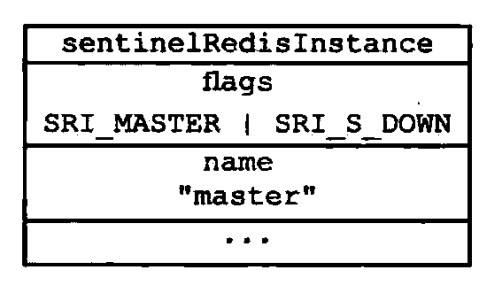
-
需要注意的是：
-
用户设置的
down-after-millionseconds选项的值，不仅会被哨兵用来判断主服务器的主观下线状态，还会被用于判断主服务器属下的所有从服务器，以及所有同样监视这个主服务器的其他哨兵的主观下线状态，例如，如果用户向哨兵设置了以下配置：sentinel monitor master 127.0.0.1 6379 2 sentinel down-after-millionseconds master 50000那么 50000 毫秒不仅会成为哨兵判断
master进入主观下线的标准，还会成为哨兵判断master属下所有从服务器，以及所有同样监视master的其他哨兵进入主观下线的标准。 -
对于监视同一个主服务器的多个哨兵来说，这些哨兵所设置的
down-after-millionseconds选项的值也可能不同，因此，当一个哨兵将主服务器判断为主观下线时，其他哨兵可能仍然会认为主服务器处于在线状态，例如，假如Sentinel1载入了以下配置：sentinel monitor master 127.0.0.1 6379 2 sentinel down-after-millionseconds master 50000Sentinel2载入了以下配置：sentinel monitor master 127.0.0.1 6379 2 sentinel down-after-millionseconds master 10000那么当
master的断线时长超过 10000 毫秒之后，Sentinel2会将master判断为主观下线，而Sentinel1确认为master在线，只有当master的断线时长超过 50000 毫秒之后，Sentinel1和Sentinel2才会都认为master进入了主观下线状态。
-
2.7 检查客观下线状态 #
- 当哨兵将一个主服务器判断为主观下线之后，为了确认这个主服务器是否真的下线了，他会向同样监视这一主服务器的其它哨兵进行询问，看他们是否也认为主服务器已经进入了下线状态（可以是主观下线或者客观下线）。
- 当哨兵从其他哨兵那里接收到足够数量的已下线判断之后，哨兵就会将服务器判定为客观下线，并对主服务器执行故障转移操作。
2.7.1 发送 SENTINEL is-master-down-by-addr 命令 #
-
该命令的使用方法如下：
SENTINEL is-master-down-by-addr <ip> <port> <current_epoch> <runid> -
该命令主要用于询问其他哨兵是否同意主服务器已下线，命令中的各个参数的意义如下所示：
ip：被哨兵判断为主观下线的主服务器的 IP 地址。port：被哨兵判断为主观下线的主服务器的端口号。current_epoch：哨兵当前的配置纪元，用于选举领头哨兵。runid：可以是*符号或者哨兵的运行 ID，其中*表示命令仅仅用于检测主服务器的客观下线状态，哨兵的运行 ID 用于选举领头哨兵。
2.7.2 接收 SENTINEL is-master-down-by-addr 命令 #
- 当一个哨兵（目标哨兵）接收到另一个哨兵（源哨兵）发来的
SENTINEL is-master-down-by-addr命令时，目标哨兵会分析并取出命令请求中包含的各个参数，并根据其中的主服务器 IP 和端口号，检查主服务器是否已下线，然后向源哨兵返回一条包含三个参数的回复，具体如下：down_state：目标哨兵对主服务器的检查结果，1 代表主服务器已下线，0 代表主服务器未下线。leader_runid：可以是*符号或者目标哨兵的局部领头哨兵的运行 ID，其中*符号代表命令仅仅用于检测主服务器的下线状态，而局部领头哨兵的运行 ID 则用于选举领头哨兵。leader_epoch：目标哨兵的局部领头哨兵的配置纪元，用于选举领头哨兵，仅在leader_runid的值不为*时有效，如果leader_runid的值为*，那么leader_epoch总为 0。
- 具体实例如下：
-
如果一个哨兵返回以下回复作为
SENTINEL is-master-down-by-addr：1 * 0那么说明哨兵也同意主服务器已下线。
-
2.7.3 接收 SENTINEL is-master-down-by-addr 命令的回复 #
-
根据其他哨兵发回的
SENTINEL is-master-down-by-addr命令回复，哨兵将统计其他哨兵同意主服务器已下线的数量，当这一数量达到配置指定的判断客观下线所需的数量（哨兵配置中设置的 quorum 参数的值）时，该哨兵就会认为主服务器已经进入客观下线状态，然后会将主服务器实例结构flags属性的SRI_O_DON标识打开，表示主服务器已经进入客观下线状态。
例如，如果哨兵在启动时载入了以下配置：
sentinel monitor master 127.0.0.1 6379 2那么包括当前哨兵在内，只要总共有两个哨兵认为主服务器已经进入下线状态，那么当前哨兵就将主服务器判断为客观下线。
-
需要注意的是：
- 对于监视同一个主服务器的多个哨兵来说，他们将主服务器判断为客观下线的条件可能也不同，当一个哨兵将主服务器判断为客观下线时，其他哨兵可能并不是那么认为的，例如：
-
对于监视同一个主服务器的五个哨兵来说，如果
Sentinel1在启动时载入了以下配置：sentinel monitor master 127.0.0.1 6379 2那么当五个哨兵中有两个哨兵认为主服务器已经下线时，
Sentinel1就会将主服务器判断为客观下线。 -
如果
Sentinel2在启动时载入了以下配置：sentinel monitor master 127.0.0.1 6379 5当仅有两个哨兵认为主服务器下线，并不会令
Sentinel2将主服务器判断为客观下线。
-
- 对于监视同一个主服务器的多个哨兵来说，他们将主服务器判断为客观下线的条件可能也不同，当一个哨兵将主服务器判断为客观下线时，其他哨兵可能并不是那么认为的，例如：
2.8 选举领头哨兵 #
- 当一个主服务器被判断为客观下线时，监视这个下线主服务器的各个哨兵会进行协商，选举出一个领头哨兵，并由领头哨兵对下线主服务器执行故障转移操作。
- 选举领头哨兵的规则和方法如下：
- 所有在线的哨兵都有被选为领头哨兵的资格，换句话说，监视同一个主服务器的多个在线哨兵中的任意一个都有可能成为领头哨兵。
- 每次进行领头哨兵选举之后，无论选举是否成功，所有哨兵的配置纪元（Configuration Epoch）的值都会自增一次，配置纪元实际上就是一个计数器，并没有什么特别的。
- 在一个配置纪元里面，所有哨兵都有一次将某个哨兵设置为局部领头哨兵的机会，并且局部领头一旦设置，在这个配置纪元里面就不能再更改。
- 每个发现主服务器进入客观下线的哨兵都会要求其他哨兵将自己设置为局部领头哨兵。
- 当一个哨兵（源哨兵）向另一个哨兵（目标哨兵）发送
SENTINEL is-master-down-by-addr命令，并且命令中的runid参数不是*而是源哨兵的运行 ID 时，这表示源哨兵要求目标哨兵将前者设置为后者的局部领头哨兵。 - 哨兵设置局部领头哨兵的规则是先到先得，最先向目标哨兵发送设置要求的源哨兵将成为目标哨兵的局部领头哨兵，而之后接收到的所有设置要求都会被目标哨兵拒绝。
- 目标哨兵在接收到
SENTINEL is-master-down-by-addr命令之后，将向源哨兵返回一条命令回复，回复中的leader_runid参数和leader_epoch参数分别记录了目标哨兵的局部领头哨兵的运行 ID 和配置纪元。 - 源哨兵在接收到目标哨兵返回的命令回复之后，会检查回复中
leader_epoch参数的值和自己的配置纪元是否相同，如果相同的话，那么源哨兵继续取出回复中的leader_runid参数，如果leader_runid参数的值和源哨兵的运行 ID 一致，那么表示目标哨兵将源哨兵设置成了局部领头哨兵。 - 如果有某个哨兵被半数以上的哨兵设置成了局部领头哨兵，那么这个哨兵成为领头哨兵，例如，在一个由 10 个哨兵组成的哨兵系统里面，只要有大于等于
10 / 2 + 1 = 6个哨兵将某个哨兵设置为局部领头哨兵，那么被设置的那个哨兵就会成为领头哨兵。 - 因为领头哨兵的产生需要半数以上哨兵的支持，并且每个哨兵在每个配置纪元里面只能设置一次局部领头哨兵，所以在一个配置纪元里面，只会出现一个领头哨兵。
- 如果在给定时限内，没有一个哨兵被选举为领头哨兵，那么各个哨兵将在一段时间之后再次进行选举，直到选到领头哨兵为止。
- 具体实例如下：
-
假设现在有三个哨兵正在监视同一个主服务器，并且这三个哨兵之前已经通过
SENTINEL is-master-down-by-addr命令确认主服务器进入了客观下线状态，如下图所示：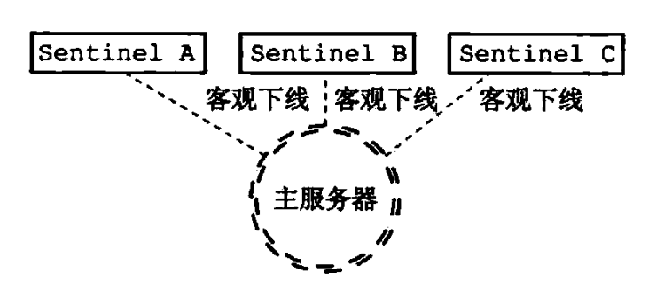
-
为了选出领头哨兵，三个哨兵将再次向其他哨兵发送
SENTINEL is-master-down-by-addr命令：
-
和检测客观下线状态时发送的
SENTINEL is-master-down-by-addr命令不同，哨兵这次发送的命令会带有自己的运行 ID，例如SENTINEL is-master-down-by-addr 127.0.0.1 6379 0 e955b4c85598ef5b5f055bc7ebfd5e828dbed4fa。 -
如果收到这个目录的哨兵还没有设置局部领头哨兵的话，他就会将运行 ID 为
e955b4c85598ef5b5f055bc7ebfd5e828dbed4fa的哨兵设置为自己的局部领头哨兵，并返回类似以下的命令回复：1 e955b4c85598ef5b5f055bc7ebfd5e828dbed4fa 0 -
然后接收到命令回复的哨兵就可以根据这一回复，统计出有多少个哨兵将自己设置成了局部领头哨兵。
-
根据命令请求发送的先后顺序不同，可能会有某个哨兵的
SENTINEL is-master-down-by-addr命令比起其他哨兵发送的相同命令都更快到达，并最终胜出领头哨兵的选举，然后这个领头哨兵就可以开始对主服务器执行故障转移操作了。
-
2.9 故障转移 #
- 在选举产生出领头哨兵之后，领头哨兵将对已下线的主服务器进行故障转移操作，该操作包含以下步骤：
- 在已下线主服务器属下的所有从服务器里面，挑选出一个从服务器，并将其转换为主服务器。
- 让已下线主服务器属下的所有从服务器改为复制新的主服务器。
- 将已下线主服务器设置为新的主服务器的从服务器，当这个旧的主服务器重新上线时，他就会成为新的主服务器的从服务器。
2.9.1 选出新的主服务器 #
- 故障转移操作第一步要做的就是在已下线主服务器属下的所有从服务器中，挑选出一个状态良好、数据完整的从服务器，然后向这个从服务器发送
SLAVEOF no one命令，将这个从服务器转换为主服务器，具体的挑选主服务器的方法如下：- 领头哨兵会将已下线主服务器的所有从服务器保存到一个列表里面，然后按照以下规则，一项一项地对列表进行过滤：
- 删除列表中所有处于下线或者断线状态的从服务器，这样可以保证列表中剩余的从服务器都是正常在线的。
- 删除列表中所有最近5秒内没有回复过领头哨兵的
INFO命令的从服务器，这样可以保证列表中剩余的从服务器都是最近成功进行过通信的。 - 删除所有与已下线主服务器连接断开超过
down-after-millionseconds * 10毫秒的从服务器，down-after-millionseconds选项指定了判断主服务器下线所需的时间，而删除断开时长超过down-after-millionseconds * 10毫秒的从服务器，则可以保证列表中剩余的从服务器都没有过早地与主服务器断开连接，换句话说，列表中剩余的从服务器保存的数据都是比较新的。
- 之后，领头哨兵将根据从服务器的优先级，对列表中剩余的从服务器进行排序，并选出其中优先级最高的从服务器。
- 如果有多个具有相同最高优先级的从服务器，那么领头哨兵将按照从服务器的复制偏移量，对具有相同最高优先级的所有从服务器进行排序，并选出其中偏移量最大的从服务器（复制偏移量最大的从服务器就是保存着最新数据的从服务器）。
- 最后，如果有多个 优先级最高、复制偏移量最大的从服务器，那么领头哨兵将按照运行ID对这些从服务器进行排序，并选出其中运行ID最小的从服务器。
- 领头哨兵会将已下线主服务器的所有从服务器保存到一个列表里面，然后按照以下规则，一项一项地对列表进行过滤：
- 在发送
SLAVEOF no one命令之后，领头哨兵会以每秒一次的频率（平时是每十秒一次），向被升级的从服务器发送INFO命令，并观察命令回复中的角色信息，当被升级服务器的角色从原来的slave变为master时，领头哨兵就知道被选中的从服务器已经顺利升级为主服务器了。 - 具体实例如下：
-
下图展示了再一次故障转移操作中，领头哨兵向被选中的从服务器
server2发送SLAVEOF no one命令的情形：
-
领头哨兵会一直向
server2发送INFO命令，当server2返回的命令回复从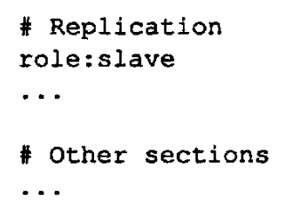
变为
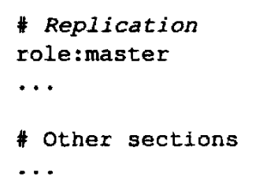
的时候，领头哨兵就知道
server2已经成功升级为主服务器了。 -
下图展示了
server2升级成功之后，各个服务器和领头哨兵的样子：
-
2.9.2 修改从服务器的复制目标 #
-
当新的主服务器出现之后，领头哨兵下一步要做的就是，让已下线主服务器属下的所有从服务器去复制新的主服务器，这一动作可以通过向从服务器发送
SLAVEOF命令来实现。 -
下图展示了在故障转移操作中，领头哨兵向已下线主服务器
server1的两个从服务器server3和server4发送SLAVEOF命令，让他们复制新的主服务器server2：
-
下图展示了
server3和server4成为server2的从服务器之后，各个服务器以及领头哨兵的样子：
2.9.3 将旧的主服务器变为从服务器 #
- 故障转移操作最后要做的是，将已下线的主服务器设置为新的主服务器的从服务器，因为旧的主服务器已经下线，所以这种设置是保存在旧的主服务器对应的实例结构里面的，当旧的主服务器重新上线时，哨兵就会向他发送
SLAVEOF命令，让他成为新的主服务器的从服务器。 - 具体实例如下：
-
下图展示了被领头哨兵设置为从服务器之后，服务器
server1的样子：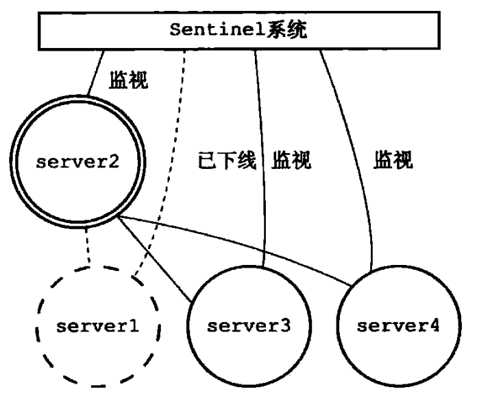
-
下图展示了
server1重新上线并成为server2的从服务器的例子：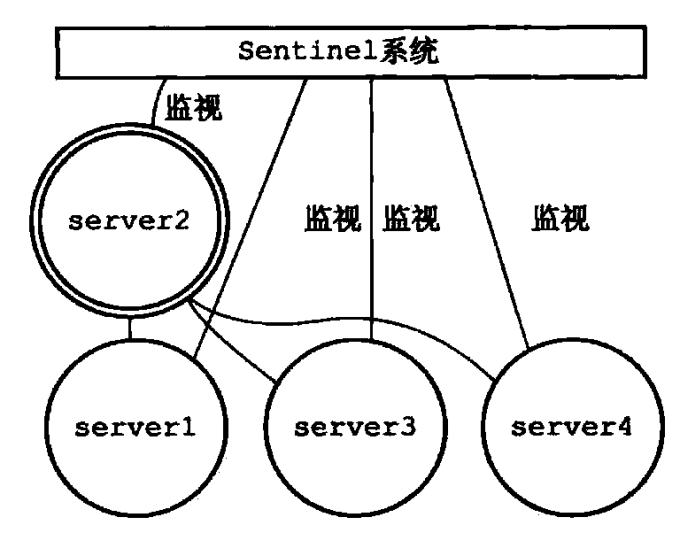
-
参考文献 #
- redis 设计与实现（第二版）。